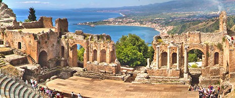

About Me

Hello! My name is Dario Giaccone and I am from Palermo, Sicily, Italy. I am an electronics technician and I work for a company that repairs motherboards. I am studying Software Development at BYU-Idaho. In my free time I like hiking and playing sports.
Sicily, Italy
Sicily is an Italian region with special status, with Palermo as its capital. It is the largest of the Italian and Mediterranean islands, the seventh in Europe, and the 45th largest island in the world, bathed to the north by the Tyrrhenian Sea, to the west by the Strait of Sicily, to the southwest by the Sea of Sicily, to the southeast by the Strait of Malta, to the east by the Ionian Sea and to the northeast by the Strait of Messina, which separates it from Calabria, with the remaining part consisting of the Aeolian, Egadi and Pelagie archipelagos, as well as the islands of Ustica and Pantelleria. It is the largest region in Italy and the fifth in terms of population. Sicily is a predominantly hilly region (61.4% of the territory), while 24.5% is mountainous and the remaining 14.1% is flat; the largest plain is the Piana di Catania. The relief is varied and, while in eastern Sicily the Sicilian Apennines can be recognized as the ideal continuation of the Calabrian Apennines, central and western Sicily hosts isolated massifs. The second highest peak on the island after Etna (3,357 meters) is found in the Madonie: Pizzo Carbonara (1,979 meters). Sicily is a region rich in artistic monuments of Arab-Norman, Roman, Greek, Byzantine and Baroque origin, rich in archaeological sites such as the Valley of the Temples, Selinunte and Segesta.